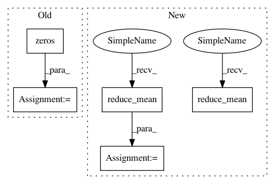

369afab10deee16ef572c738df083d2e74863e64,niftynet/application/toy_application.py,ToyApplication,connect_data_and_network,#ToyApplication#Any#Any#,43
Before Change
real_logits, fake_logits, fake_features = self.net(features, noise)
batch_size = tf.shape(real_logits)[0]
d_loss = \
tf.losses.sparse_softmax_cross_entropy(
tf.ones([batch_size, 1], tf.int32), real_logits) + \
tf.losses.sparse_softmax_cross_entropy(
tf.zeros([batch_size, 1], tf.int32), fake_logits)
g_loss = \
tf.losses.sparse_softmax_cross_entropy(
tf.ones([batch_size, 1], tf.int32), fake_logits)
After Change
//g_loss = \
// tf.reduce_mean(tf.nn.sigmoid_cross_entropy_with_logits(
// labels=tf.ones_like(fake_logits), logits=fake_logits))
d_loss = tf.reduce_mean(real_logits - fake_logits)
g_loss = tf.reduce_mean(fake_logits)
with tf.name_scope("ComputeGradients"):
d_vars = tf.get_collection(
tf.GraphKeys.TRAINABLE_VARIABLES,
In pattern: SUPERPATTERN
Frequency: 3
Non-data size: 5
Instances
Project Name: NifTK/NiftyNet
Commit Name: 369afab10deee16ef572c738df083d2e74863e64
Time: 2017-08-27
Author: wenqi.li@ucl.ac.uk
File Name: niftynet/application/toy_application.py
Class Name: ToyApplication
Method Name: connect_data_and_network
Project Name: IBM/adversarial-robustness-toolbox
Commit Name: f97d4a9b5376e52b5fd0c571a5d34b520d80efc6
Time: 2020-07-03
Author: kz.takemoto@gmail.com
File Name: utils/resources/create_inverse_gan_models.py
Class Name:
Method Name: build_gan_graph
Project Name: NifTK/NiftyNet
Commit Name: 369afab10deee16ef572c738df083d2e74863e64
Time: 2017-08-27
Author: wenqi.li@ucl.ac.uk
File Name: niftynet/application/toy_application.py
Class Name: ToyApplication
Method Name: connect_data_and_network
Project Name: MorvanZhou/tutorials
Commit Name: 9352eece98d1205a01c2c7603538ea08a3d1f639
Time: 2017-04-02
Author: morvanzhou@gmail.com
File Name: Reinforcement_learning_TUT/experiments/Solve_BipedalWalker/A3C.py
Class Name: ACNet
Method Name: __init__